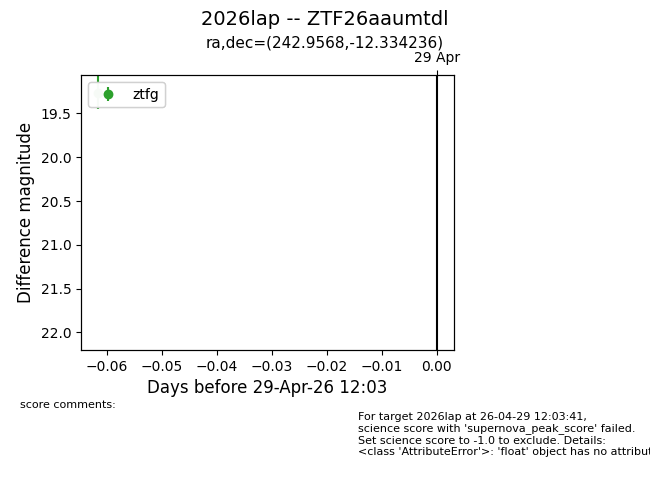
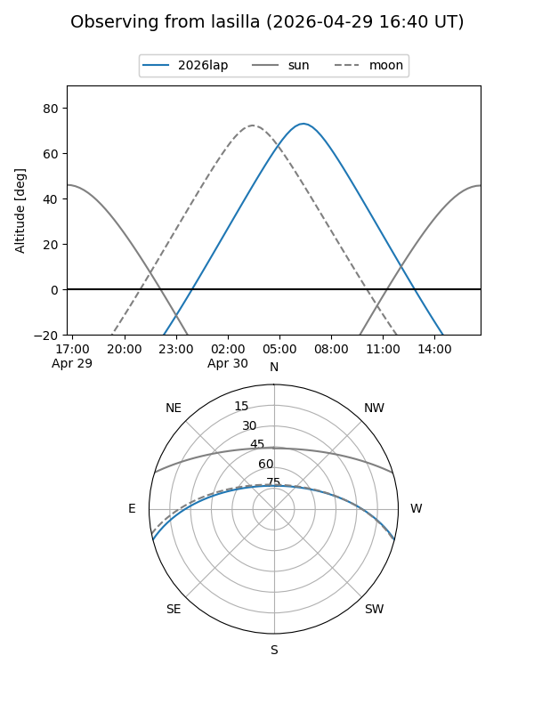
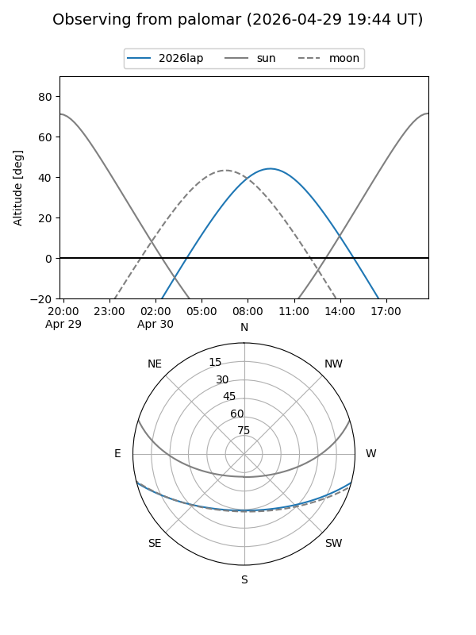
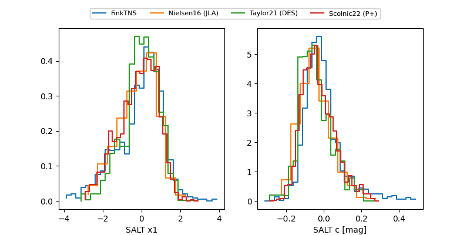

2026lap
Target 2026lap at 2026-04-29 12:07
Aliases and brokers:
FINK: link
Lasair: link
ALeRCE: link
TNS: link
YSE: link
alt names
ZTF26aaumtdl (ztf,fink_ztf)
2026lap (tns,yse)
Coordinates:
equatorial (ra, dec) = 242.9568,-12.33424
equatorial (HMS+DMS) = 16:11:49.62,-12:20:03.25
galactic (l, b) = (0.5173,+27.40856)
Flags:
Photometry:
last ztfg=19.26
1 ztfg detections
Lightcurve

Visibility


Additional plots
